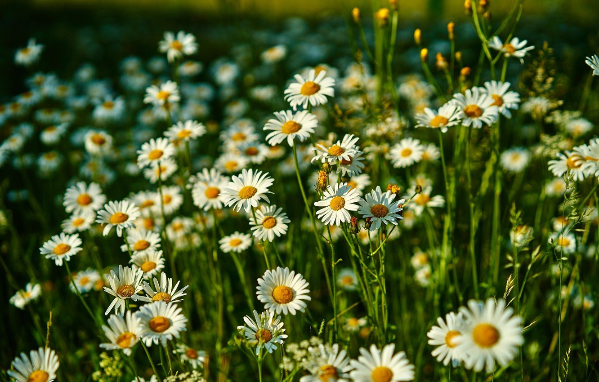
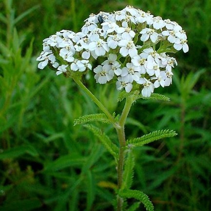
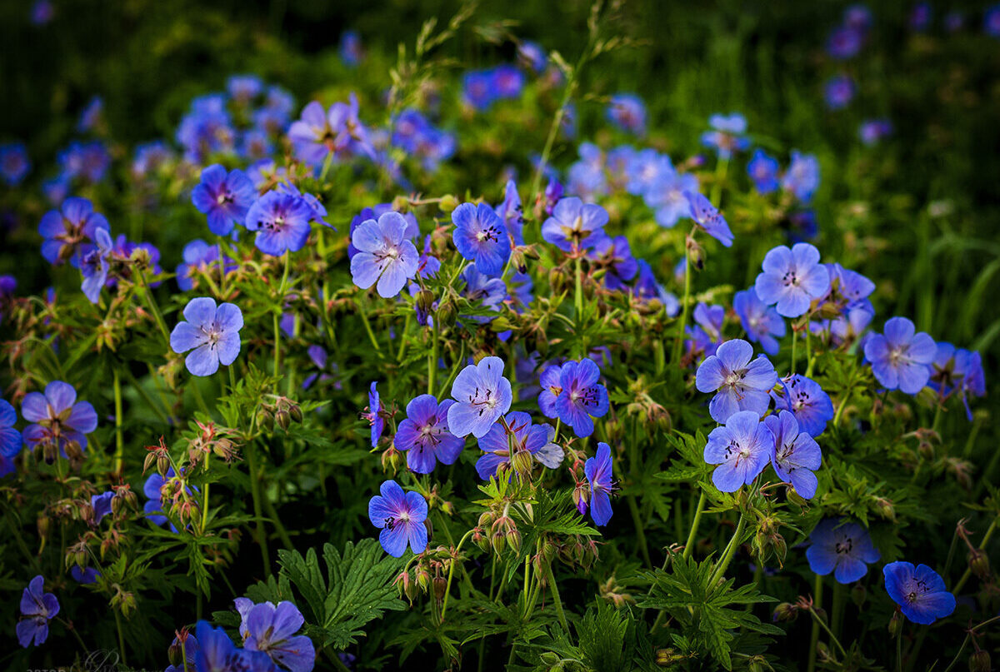

Польові квіти України

Ромашка
або рома́шка польова́ (Matricaria L.; інші назви: рома́н, роме́н, неві́стка, невісту́льки; рідко, рум'я́нок, королька) — рід однорічних дуже розгалужених рослин з сильним ароматичним запахом з родини айстрові.Рослина з сильним ароматним запахом. Росте невеликими заростями або групами на подвір'ях, біля доріг, на вулицях, у садах майже по всій території України, проте на Поліссі — рідше. Культивується. Важлива лікарська рослина. Збирають суцвіття (кошики). Використовуються як потогінний, дезінфікуючий, в'яжучий, заспокійливий та протизапальний засіб.Цвіте в червні — серпні.

Деревій
волосисто запушена трав'яниста рослина з кореневищем, родини айстрових (Asteraceae).Інші назви: Деревій тисячолистий, кривавник, серпоріз, маточник тощо. Латинська назва роду походить від імені міфічного героя Ахіллес, який нібито першим використав цю рослину для лікування. Видова назва утворена від грецьких слів, що в перекладі означають «тисяча листків». Українська назва, очевидно, пов'язана з наявністю в рослині дубильних речовин.Деревій як цінна лікарська рослина відомий ще з глибокої давнини.Деревій — літній медодай, добре відвідується бджолами, виділяє нектар і дає багато пилку.

Журавець
Рослина також відома під народними назвами бузьочник, васильки лісові, вереск болотний, вовчуга, вовчура, враз жіночий, грабельки, грабки, дворянин, дзіндзівер, журавельник, журавлинник, кленовий лист, кудрявчик, лапа вовча, лапка орлина, лапки вовчі, лапошник, лико вовче, маточник, маточниця, підорішник, пліснявка, ранник, ружа польова, стопа вовча, сузик, тоя берегова, тоя лісова, троїця, францовник, червишник, черевички зозулині.Трав'янистий багаторічник заввишки 30-80 см, що росте на узліссях та луках, у світлих лісах, серед чагарників і біля житла, звичайно у лісовій зоні та у лісостепу.